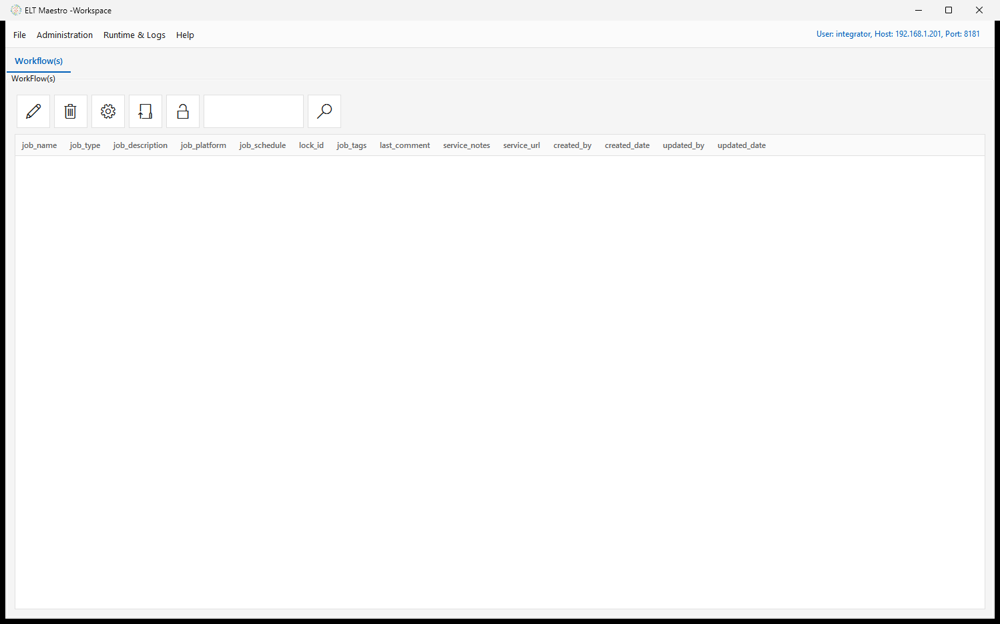
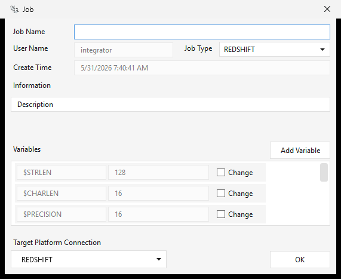
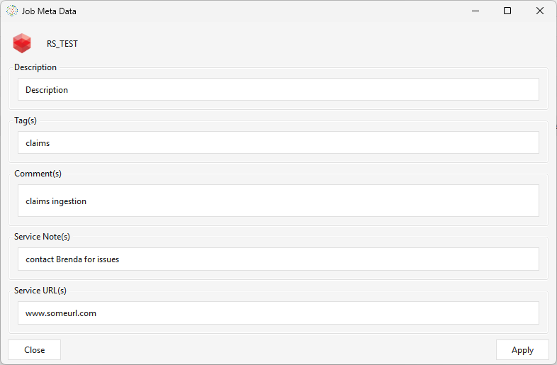
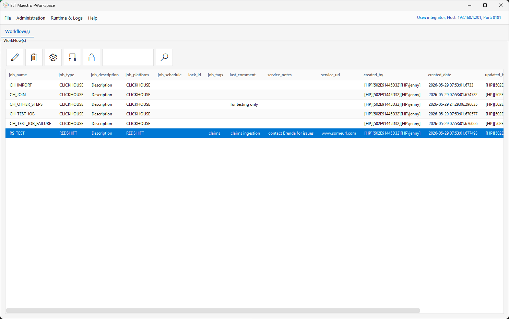
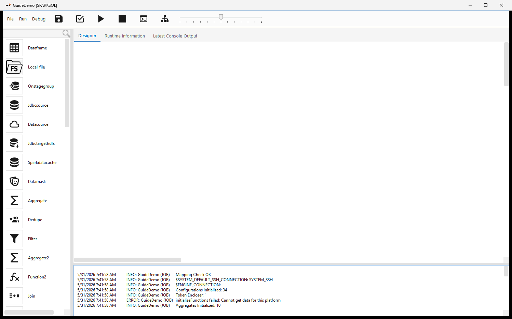
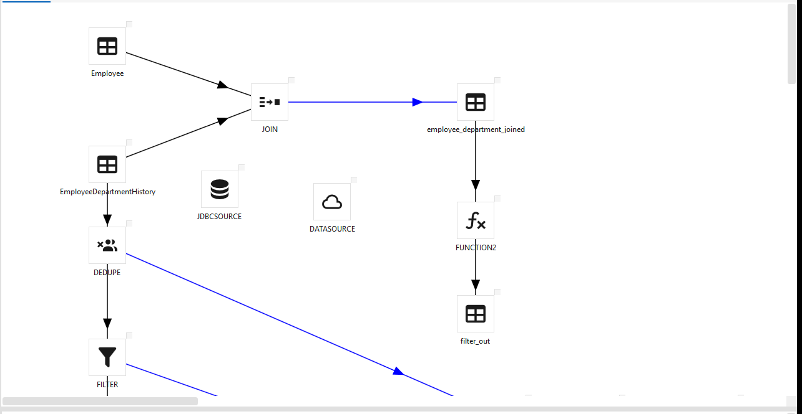
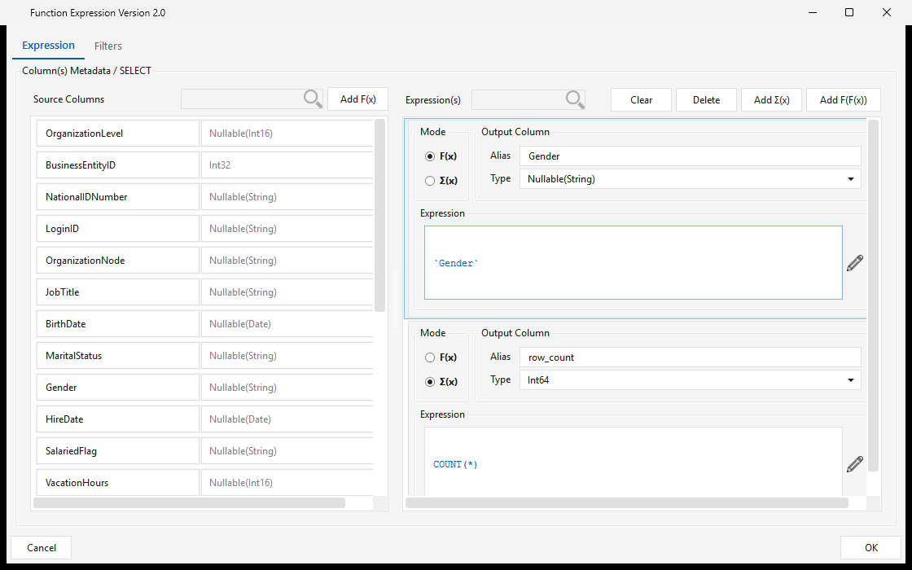

Workflows¶
Part 4 of the ELTMaestro User Guide. Building, running, and monitoring jobs (workflows). This is where the connections from Administration & Setup get used.
Creating a workflow (job)¶
The Workflow(s) tab is the home for all your jobs. Its action toolbar — New, Delete, Config (job metadata), Edit Workflow, and Unlock — sits above a searchable list whose columns (job_name, job_type, job_description, job_platform, job_schedule, tags, comments, service notes/URL, audit columns) summarize every workflow on the server:

From this tab click New (or File ▸ Create Work Flow) to open the Create Job dialog:
| Field | Notes |
|---|---|
| Job Name | Name for the workflow (normalized to a proper name). |
| Job Type | The target platform / integrator: SNOWFLAKE, REDSHIFT, NETEZZA, GREENPLUM, SPARKSQL, DATABRICKS, YELLOWBRICK, CLICKHOUSE, FIREBOLT, EXASOL, SYNAPSE. |
| Platform Connection | The connection the job runs against — populated from the JDBC connections you created in Administration for that platform. Only valid MPP connections appear here — if yours is missing, it was created without the required MPP_Driver_* jar. (For SPARKSQL the list is HDFS connections instead.) |
| Job variables | Starter variables — $STRLEN (128), $CHARLEN (16), $PRECISION (16), $SCALE (4) — plus empty $VAR_n slots you can rename and fill. Referenced in step expressions as $NAME. |

Click OK to create the workflow and open it in the Job editor.
This is the moment the connection binds to the job: the selected platform connection's name is written into the job's XML, and the job's type is fixed by it — the editor title bar shows it in brackets, e.g.
MyJob [SPARKSQL]. Renaming or deleting that connection later breaks the job — see the connection note.
Configuring job metadata¶
Select a workflow on the Workflow(s) tab and click the Config button — the gear icon (tooltip Set job metadata) — to open the Job Metadata editor. This is descriptive metadata for documentation, discoverability, grouping, and support; it does not change how the job runs. Fill in what's useful and click Apply:
| Field | Use |
|---|---|
| Description | What the workflow does. |
| Tag(s) | Labels for categorizing/grouping workflows and finding related ones. |
| Comment(s) | Free-form notes. |
| Service Note(s) | Support / operational notes — ownership, runbook steps, caveats. |
| Service URL(s) | Links to related resources — runbooks, tickets, dashboards, docs. |

Once you Apply, the metadata travels with the workflow and is shown alongside it in the Workflow(s) list on the main window — in the job_description, job_tags, last_comment, service_notes, and service_url columns:

The Job editor — designing the DAG¶
Edit Workflow (or double-clicking a workflow) opens the editor. Layout:
- Menu bar — File (Save · Save As · Save Locally… = export the canvas to a job-XML file on your machine, no server write · Exit), Run (Run · Stop), Debug (Check Mapping · View Runtime Log).
- Toolbar — icon buttons for Save, Check Workflow, Run, Stop, Runtime CLI Configuration, and View Lineage, plus a zoom slider. A red lock indicator shows the workflow's lock state.
- Step palette (left) — a scrollable, searchable list of every step type available for this job's platform: sources & loaders (
Dataframe,Local_file,Onstagegroup,Jdbcsource,Datasource,Jdbctargethdfs, …), transforms (Aggregate,Aggregate2,Dedupe,Filter,Function2,Join,Datamask, …), caches, and control steps. The exact list depends on the job type. - Designer canvas (centre, the Designer tab) — where you place and wire steps.
- Message tabs (bottom) — Messages, Runtime Information, and Latest Console Output. On open, the editor logs its initialization here (configurations/aggregates loaded, default SSH/engine connections, mapping check).

A finished workflow wires source steps through transforms into output tables. For example, two source tables joined and the result passed through a function step, plus a separate dedupe → filter branch:

Adding steps¶
Add a step either by picking it from the left step palette (type in the Search box to filter) or by right-clicking the canvas and choosing Insert Step ▸ type — it drops at the click point (the same menu also offers Paste). Step types are grouped by purpose (sources/loaders, transforms, SQL, control, platform-specific, …). Double-click a step to open its configuration dialog, where you set its inputs, outputs, and column expressions.
For what each step type does, its dialog, and its options, see the Step reference.
Connecting steps¶
Drag from one step to the next to draw an arrow. Arrows define the execution order and the success/failure branches of the DAG. Steps that hit the database use the platform connection bound at job creation; file steps use your SSH / cloud connections.
Configuring a step — the expression builder¶
Double-click any step to open its configuration. Transform steps (Function/Function2, Aggregate/Aggregate2, Filter, Join, Dedupe, …) open an expression editor where you shape the step's output columns from its inputs:

- Source Columns (left) — the columns flowing in from upstream steps, with their data types. Searchable; Add F(x) promotes a source column to an output.
- Output Column(s) (right) — each column the step emits, defined by:
- Alias — the output column name (e.g.
Gender,row_count). - Type — the output data type (e.g.
Nullable(String),Int64). - Mode — F(x) for a per-row scalar expression, or Σ(x) for an aggregate.
- Expression — the formula: a passthrough like
`Gender`or an aggregate likeCOUNT(*). The pencil opens a larger expression editor. - Add F(x) / Add Σ(x) / Add F(F(x)) add a scalar, aggregate, or nested-function output; Clear / Delete manage them. Functions, aggregates, constants, and operators come from the function catalog.
- The Filters tab adds row-level filter conditions (WHERE / HAVING) for the step.
Click OK to save the mapping back into the job; Check Mapping then validates every step's columns across the DAG.
Validate & save¶
- Check Mapping validates each step's input/output column mappings and reports issues in the Messages pane.
- Save writes the design to the server; Save As saves it under a new name; Save Locally… exports the job XML to disk.
Executing a workflow¶
- Run first saves the current design, then submits the job; the editor shows RUNNING, the window title reflects the run state, and a run number is assigned.
- Stop requests a halt of the running workflow.
- You can also launch a run from the main Workflow(s) list.
Monitoring¶
Within the Job editor (bottom tabs):
- Messages — the editor's initialization and action log.
- Runtime Information — the runtime URL and details for the open job (Refresh).
- Latest Console Output — tail of the latest step's console log (set the line count, then Refresh).
- View Runtime Log (Debug menu) — the run's engine log.
Across all workflows, use the main window's Runtime & Logs ▸ Logging ▸ Workflow Logs for run history and detailed logs. The log and report viewers are covered in Menus in depth.
Tying it together¶
A workflow connects to the rest of ELTMaestro:
| Want to… | Where |
|---|---|
| See a workflow's data lineage (column/step) | Job editor View Lineage button, or Runtime & Logs ▸ Reports ▸ Data Lineage Utility → LINEAGE.md |
| Get emailed on success/failure | Administration ▸ Workflow Configuration ▸ Email Alerts → UG-MENUS.md |
| Run a workflow on a schedule | Administration ▸ Scheduler (cron) → UG-MENUS.md |
| Manage incremental-load watermarks | Administration ▸ Workflow Configuration ▸ Job Watermarks |
| Move a workflow between servers | Administration ▸ Migration ▸ Export / Import Workflow(s) |
| Document / tag a workflow | the Job Metadata gear icon |
| Validate the data | Administration ▸ Metrics Configuration ▸ Control Test / Data Quality Management |
| Organize jobs into Bronze / Silver / Gold layers | Medallion architecture — layer tags + JobStep chaining |
That's the full loop: sign in → set up connections → design & run workflows → monitor → schedule & alert.
For designing multi-layer pipelines (raw → cleaned → marts), see Medallion architecture with ELTMaestro.